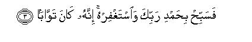

بسم الله الرحمن الرحيم
Sayyid Abul Ala Maududi - Tafhim al-Qur'an - The Meaning of the Qur'an
 110.
Surah An Nasr (The Help)
110.
Surah An Nasr (The Help)
The Surah takes its name from the word nasr occurring in the first verse.
Hadrat Abdullah bin Abbas states that this is the last Surah of the Quran to be revealed, i. e. no complete Surah was sent down to the Holy Prophet after it. (Muslim Nasai, Tabarani, Ibn Abi Shaibah, Ibn Marduyah).
According to Hadrat Abdullah bin Umar, this Surah was sent down on the occasion of the Farewell Pilgrimage in the middle of the Tashriq Days at Mina, and after it the Holy Prophet rode his she camel and gave his well known Sermon. (Tirmidhi, Bazzar, Baihaqi, Ibn Abi Shaibah, Abd bin Humaid, Abn Yala, Ibn Marduyah). Baihaqi in Kitab al- Hajj has related from the tradition of Hadrat Sarra bint-Nabhan the Sermon which the Holy Prophet gave on this occasion. She says:
"At the Farewell Pilgrimage I heard the Holy Prophet say: O people, do you know what day it is? They said: Allah and His Messenger have the best knowledge. He said: This is the middle day of the Tashriq Days. Then he said: Do you know what place it is? They said: Allah and His Messenger have the best knowledge. He said: This is Masharil-Haram. Then he said: I do not know, I might not meet you here again. Beware, your bloods and your honors are forbidden, until you appear before your Lord, and He questions you about your deeds. Listen: let the one who is near convey it to him who is far away. Listen: have I conveyed the message to you? Then, when we returned to Madinah, the Holy Prophet passed away not many days after that."
If both these traditions are read together, it appears that there was an interval of three months and some days between the revelation of Surah An-Nasr and the Holy Prophet's death, for historically the same was the interval between the Farewell Pilgrimage and the passing away of the Holy Prophet.
Ibn Abbas says that when this Surah was revealed, the Holy Prophet said that he had been informed of his death and his time had approached. (Musnad Ahmad, Ibn Jarir, Ibn al-Mundhir, Ibn Marduyah). In the other traditions related from Hadrat Abdullah bin Abbas, it has been stated that at the revelation of this Surah the Holy Prophet understood that he had been informed of his departure from the world.(Musnad Ahmad, Ibn Jarir, Tabarani, Nasai, Ibn Abi Hatim, Ibn Marduyah).
Mother of the Believers, Hadrat Umm Habibah, says that when this Surah was revealed the Holy Prophet said that he would leave the world that year. Hearing this Hadrat Fatimah wept. Thereat he said: "From among my family you will be the first to join me." Hearing this she laughed.(Ibn Abi Hatim, Ibn Marduyah). A tradition containing almost the same theme has been related by Baihaqi from Ibn Abbas.
Ibn Abbas says: "Hadrat Umar used to invite me to sit in his assembly along with some of the important elderly Companions who had fought at Badr. This was not liked by some of them. They complained that they also had sons who were like the boy. Why then was he in particular invited to sit in the assembly? (Imam Bukhari and Ibn Jarir have pointed out that such a thing was said by Hadrat Abdur Rahman bin Auf).
Hadrat Umar said that the boy enjoyed the position and distinction because of his knowledge. Then one day he invited the Companions of Badr and called me also to sit with them. I understood that he had invited me to the assembly to prove his contention. During the conversation Hadrat Umar asked the Companions of Badr: "What do you say about Idha jaa nasrullahi wal- fath?" Some said: "In it we have been enjoined to praise Allah and ask for His forgiveness when His succor comes and we attain victory."Some others said that it implied the conquest of cities and forts. Some kept quiet. Then Hadrat Umar said: "Ibn Abbas, do you also say the same?"I said no. He asked: "What then is your view?"I submitted that it implied the last hour of Allah's Messenger (upon whom be peace); in it he was informed that when Allah's succor came and victory was attained, it would be a sign that his hour had come; therefore, he should praise Allah and ask for His forgiveness. Thereat Hadrat Umar said "I know naught but what you have said."
In another tradition there is the addition that, Hadrat Umar said to the Companions: "How can you blame me when you yourselves have seen why I invite this boy to join the assembly?" (Bukhari, Musnad Ahmad, Tirmidhi, Ibn Jarir, Ibn Marduyah, Baghawi, Baihaqi, Ibn al-Mundhir).
As is shown by the above traditions, Allah in this Surah had informed His Messenger (upon whom be peace) that when Islam attained complete victory in Arabia and the people started entering Allah's religion in great numbers, it would mean that the mission for which he had been sent to the world, had been fulfilled. Then, he was enjoined to busy himself in praising and glorifying Allah by Whose bounty he had been able to accomplish such a great task, and should implore Him to forgive whatever failings and frailties he might have shown in the performance of the service. Here, by a little consideration one can easily see the great difference that there is between a Prophet and a common worldly leader. If a worldly leader in his own lifetime is able to bring about a revolution, which has the aim and objective of his struggle, this would be an occasion for exultation for him. But here we witness quite another phenomenon. The Messenger of Allah in a brief space of 23 years revolutionized an entire nation as regards its beliefs, thoughts, customs, morals, civilization, ways of living, economy, politics and fighting ability, and raising it from ignorance and barbarism enabled it to conquer the world and become leader of nations; yet when he had accomplished this unique task, he was not enjoined to celebrate it but to glorify and praise Allah and to pray for His forgiveness, and he busied himself humbly the implementation of that command.
Hadrat Aishah says: "The Holy Messenger (upon whom be peace) often used to recite Subhanak-Allahumma wa bi-hamdika astaghfiruka wa atubu ilaika (according to some other traditions, Subhan Allahi wa bi hamdi-hi as- taghfirullaha wa atubu ilaihi) before his death. I asked: O Messenger of Allah, what are these words that you have started reciting now? He replied: A sign has been appointed for me so that when I see it, I should recite these words, and it is: Idha jaa nasrullahi wal-fathu." (Musnad Ahmad, Muslim, Ibn Jarir, lbn al-Mundhir, Ibn Marduyah).
In some other traditions on the same subject Hadrat Aishah has reported that the Holy Prophet often recited the following words in his ruku and sajdah: Subhanak-Allahumma wa-bi hamdika, Allahumma- aghfirli. This was the interpretation of the Quran (i. e. of Surah An-Nasr) that he had made.(Bukhari, Muslim Abu Daud, Nasai, Ibn Majah, Ibn Jarir).
Hadrat Umm Salamah says that the Holy Prophet (upon whom be peace) during his last days very often recited the following words sitting and standing, going out of the house and coming back to it: Subhan Allahi wa-bi hamdi-hi. I one day asked: "Why do you recite these words so often? O Messenger of Allah". He replied: I have been enjoined to do so. Then he recited this Surah." (Ibn Jarir).
According to Hadrat Abdullah bin Masud, when this Surah was revealed, the Messenger of Allah (upon whom be peace) frequently began to recite the words Subhanak-Allahumma wa bi-hamdika, Allahumm-aghfirli, subhanaka Rabbana wa bi-hamdika, Allahumm-aghfirli, innaka anta at- Tawwab al-Ghafur.(Ibn Jarir, Musnad Ahmad, Ibn Abi Hatim).
Ibn Abbas has stated that after the revelation of this Surah the Holy Messenger (upon whom be peace) began to labor so intensively and devotedly hard for the Hereafter as he had never done before.

In the name of Allah, the Compassionate, the Merciful.

[1-3] When Allah's help comes and victory is attained.1 And (O Prophet,) you see that the people are entering into Allah's Religion in crowds.2 Then glorify your Lord with His praise,3 and pray for His forgiveness.4 Indeed, He is ever inclined to accept repentance.
1Victory here does not imply victory in any one particular campaign but the decisive victory after which there remained no power in the land to resist and oppose Islam, and it became evident that Islam alone would hold sway in Arabia Some commentators have taken this to imply the Conquest of Makkah. But the conquest of Makkah took place iu A.H. 8, and this Surah was revealed towards the end of A.H.10, as is shown by the traditions related on the authority of Hadrat `Abdullah bin `Umar and Hadrat Sarra' bint Nabhan, which we have cited in the Introduction. Besides, the statement of Hadrat `Abdullah bin `Abbas that this is the last Surah of the Qur'an to be revealed, also goes against this commentary. For if the victory implied the conquest of Makkah, the whole of Surah at-Taubah was revealed after it then it could not be the last Surah. There is no doubt that the conquest of Makkah was decisive in that it broke the power of the Arabian pagans, yet even after this, they showed clear signs of resistance. The battles of Ta'if and Hunain were fought after it, and it took Islam about two years to attain complete control over Arabia.
2"You see ... in crowds": "When the time for the people to enter Islam in one's and two's comes to an end, and when whole tribes and people belonging to large tracts start entering it in crowds, of their own free will, and without offering battle or resistance." This happened from the beginning of A.H. 9, because of which that year has been described as the year of deputations. Deputations from every part of Arabia started coming before the Holy Messenger (upon whom be peace), entering Islam and taking the oath of allegiance to him, until when he went for the Farewell Pilgrimage to Makkah, in A.H. 10, the whole of Arabia had become Muslim, and not a single polytheist remained anywhere in the country.
3Hamd implies praising and hallowing Allah Almighty as well as thanking and paying obeisance to Him; tasbih means to regard Allah as pure and free from every blemish and weakness. The Holy Prophet was enjoined to do hamd and tasbih of Allah when he witnessed this manifestation of His power. Here, hamd means that in respect of his great success he should never entertain even a tinge of the idea that it was the result of any excellence of his own, but he should attribute it to Allah's favor and mercy, thank Him alone for it, and acknowledge with the heart and tongue that praise and gratitude for the victory and success belonged to Him alone. And tasbih means that he should regard Allah as pure and free from the limitation that exaltation of his Word stood in need of his effort and endeavor, or was dependent on it. On the contrary, his heart should be filled with the faith that the success of his effort and struggle was dependent upon Allah's support and succor. He could take this service from any of His servants He pleased. and it was His favor that He had taken it from him, and made His religion meet success through him. Besides, there is an aspect of wonder also in pronouncing the tasbih, i.e. Subhan Allah. When a wonderful incident takes place, one exclaims subhan-Allah, thereby implying that only by Allah's power such a wonderful thing had happened; otherwise no power of the world could have caused it to happen.
4"Pray for His forgiveness": "Pray to your Lord to overlook; and pardon whatever error or weakness you might have shown inadvertently in the performance of the service that He had entrusted to you," This is the etiquette that Islam has taught to man. A man might have performed the highest possible service to Allah's Religion, might have offered countless sacrifices in its cause, and might have exerted himself extremely hard in carrying out the rites of His worship, yet he should never entertain the thought that he has fulfilled the right his Lord had on him wholly. Rather he should always think that he has not been able to fulfill what was required of him, and he should implore Allah, saying: "Lord, overlook and forgive whatever weakness I might have shown in rendering Your right, and accept the little service that I have been able to perform." When such an etiquette was taught to the Holy Messenger (upon whom be peace), none in the world conceivably has toiled and struggled so hard in the cause of Allah as he did, how can another person regard his work as superb and be involved in the misunderstanding that he has fulfilled the right Allah had imposed on him? Allah's right, in fact, is so supreme that no creature can ever fulfill and render it truly and fully.
Allah in this command has taught Muslims an eternal lesson: "Do not regard any of your worship, devotion or religious service as something superb; even if you have expended your entire life in the cause of Allah, you should always think that you could not do all that was required of you by your Lord. Likewise, when you attain some victory, you should not regard it as a result of some excellence in yourselves but as a result of only Allah's bounty and favor. Then bowing humbly before your Lord, you should praise and glorify Him, and should repent and beg for His forgiveness instead of boasting and bragging of your success and victory."